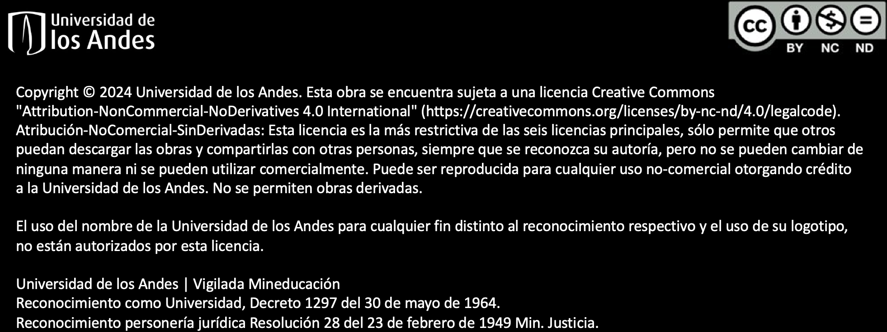

<!DOCTYPE html>
<html lang="en">
  <head>
    <meta charset="utf-8" />
    <meta name="viewport" content="width=device-width, initial-scale=1.0, maximum-scale=1.0, user-scalable=no" />

    <title></title>
    <link rel="stylesheet" href="dist/reveal.css" />
    <link rel="stylesheet" href="dist/theme/black.css" id="theme" />
    <link rel="stylesheet" href="plugin/highlight/monokai.css" />
	<link rel="stylesheet" href="css/layout.css" />
	<link rel="stylesheet" href="plugin/customcontrols/style.css">


    <script defer src="dist/fontawesome/all.min.js"></script>

	<script type="text/javascript">
		var forgetPop = true;
		function onPopState(event) {
			if(forgetPop){
				forgetPop = false;
			} else {
				parent.postMessage(event.target.location.href, "app://obsidian.md");
			}
        }
		window.onpopstate = onPopState;
		window.onmessage = event => {
			if(event.data == "reload"){
				window.document.location.reload();
			}
			forgetPop = true;
		}

		function fitElements(){
			const itemsToFit = document.getElementsByClassName('fitText');
			for (const item in itemsToFit) {
				if (Object.hasOwnProperty.call(itemsToFit, item)) {
					var element = itemsToFit[item];
					fitElement(element,1, 1000);
					element.classList.remove('fitText');
				}
			}
		}

		function fitElement(element, start, end){

			let size = (end + start) / 2;
			element.style.fontSize = `${size}px`;

			if(Math.abs(start - end) < 1){
				while(element.scrollHeight > element.offsetHeight){
					size--;
					element.style.fontSize = `${size}px`;
				}
				return;
			}

			if(element.scrollHeight > element.offsetHeight){
				fitElement(element, start, size);
			} else {
				fitElement(element, size, end);
			}		
		}


		document.onreadystatechange = () => {
			fitElements();
			if (document.readyState === 'complete') {
				if (window.location.href.indexOf("?export") != -1){
					parent.postMessage(event.target.location.href, "app://obsidian.md");
				}
				if (window.location.href.indexOf("print-pdf") != -1){
					let stateCheck = setInterval(() => {
						clearInterval(stateCheck);
						window.print();
					}, 250);
				}
			}
	};


        </script>
  </head>
  <body>
    <div class="reveal">
      <div class="slides"><section  data-markdown><script type="text/template"><!-- .slide: class="has-dark-background drop" data-background-color="#2E3440" -->
<div class="" style="position: absolute; left: 0px; top: 0px; height: 700px; width: 960px; min-height: 700px; display: flex; flex-direction: column; align-items: center; justify-content: center" absolute="true">

### Introducción a la Programación (IP)

*Funciones y Variables Locales*

[Eduardo Rosales](mailto:ee.rosales24@uniandes.edu.co)

Departamento de Ingeniería de Sistemas y Computación

Universidad de los Andes
</div></script></section><section  data-markdown><script type="text/template"><!-- .slide: class="has-dark-background drop" data-background-color="#2E3440" -->
<div class="" style="position: absolute; left: 0px; top: 0px; height: 700px; width: 960px; min-height: 700px; display: flex; flex-direction: column; align-items: center; justify-content: center" absolute="true">

### Función en Python (repaso)

- Bloque de código reutilizable con nombre
	- Diseñado para una **tarea específica**
	- Puede recibir datos de entrada
	- Puede producir un efecto 
		- Ej. Reproducir una canción
	- O puede devolver resultados
		- Ej. Un promedio
</div></script></section><section  data-markdown><script type="text/template"><!-- .slide: class="has-dark-background drop" data-background-color="#2E3440" -->
<div class="" style="position: absolute; left: 0px; top: 0px; height: 700px; width: 960px; min-height: 700px; display: flex; flex-direction: column; align-items: center; justify-content: center" absolute="true">

## Función Definida por el Usuario  
#### (user-defined function)

- Definida por los programadores
- Es una forma de extender el lenguaje y de enseñarle a Python:
-  Cálculos/operaciones/procesos que inicialmente no sabía hacer

- Hay una sintaxis para
	- *definir* (*declarar*) una función
</div></script></section><section  data-markdown><script type="text/template"><!-- .slide: class="has-dark-background drop" data-background-color="#2E3440" -->
<div class="" style="position: absolute; left: 0px; top: 0px; height: 700px; width: 960px; min-height: 700px; display: flex; flex-direction: column; align-items: center; justify-content: center" absolute="true">

# ¿Cómo se ve una Función Definida por el Usuario en Python?
</div></script></section><section  data-markdown><script type="text/template"><!-- .slide: class="has-dark-background drop" data-background-color="#2E3440" -->
<div class="" style="position: absolute; left: 0px; top: 0px; height: 700px; width: 960px; min-height: 700px; display: flex; flex-direction: column; align-items: center; justify-content: center" absolute="true">

### Estructura General de una Función


</div></script></section><section  data-markdown><script type="text/template"><!-- .slide: class="has-dark-background drop" data-background-color="#2E3440" -->
<div class="" style="position: absolute; left: 0px; top: 0px; height: 700px; width: 960px; min-height: 700px; display: flex; flex-direction: column; align-items: center; justify-content: center" absolute="true">

# Comprendamos la Estructura General de una Función
</div></script></section><section  data-markdown><script type="text/template"><!-- .slide: class="has-dark-background drop" data-background-color="#2E3440" -->
<div class="" style="position: absolute; left: 0px; top: 0px; height: 700px; width: 960px; min-height: 700px; display: flex; flex-direction: column; align-items: center; justify-content: center" absolute="true">

### `def`

```python
def nombre_funcion(par1: tipo, ...) -> tipo_de_retorno:
    # Cuerpo de la función
```

- Palabra clave usada en Python para definir una función
</div></script></section><section  data-markdown><script type="text/template"><!-- .slide: class="has-dark-background drop" data-background-color="#2E3440" -->
<div class="" style="position: absolute; left: 0px; top: 0px; height: 700px; width: 960px; min-height: 700px; display: flex; flex-direction: column; align-items: center; justify-content: center" absolute="true">

### Signatura (I)

```python
nombre_funcion(par1: tipo, ...) -> tipo_de_retorno:
```
 
-  Al encabezado de la función
	- Se le denomina *signatura*
</div></script></section><section  data-markdown><script type="text/template"><!-- .slide: class="has-dark-background drop" data-background-color="#2E3440" -->
<div class="" style="position: absolute; left: 0px; top: 0px; height: 700px; width: 960px; min-height: 700px; display: flex; flex-direction: column; align-items: center; justify-content: center" absolute="true">

### Signatura (II)

```python
nombre_funcion(par1: tipo, ...) -> tipo_de_retorno:
```

- La signatura se compone de:
	- nombre_funcion: 
		- Identificador único de la función
	- Lista de parámetros: 
		- Vacía o con múltiples parámetros
	- Tipo de retorno: 
		- El tipo de dato 
			- Que la función espera retornar
</div></script></section><section  data-markdown><script type="text/template"><!-- .slide: class="has-dark-background drop" data-background-color="#2E3440" -->
<div class="" style="position: absolute; left: 0px; top: 0px; height: 700px; width: 960px; min-height: 700px; display: flex; flex-direction: column; align-items: center; justify-content: center" absolute="true">

### Nombre de la función

- El nombre de una función es un *identificador*
	- Identificador (recordatorio): 
		- Nombre textual dado a una variable, función (y otros elementos en Python)
    
- Hay reglas que aplican a identificadores en Python
</div></script></section><section  data-markdown><script type="text/template"><!-- .slide: class="has-dark-background drop" data-background-color="#2E3440" -->
<div class="" style="position: absolute; left: 0px; top: 0px; height: 700px; width: 960px; min-height: 700px; display: flex; flex-direction: column; align-items: center; justify-content: center" absolute="true">

### Reglas para Identificadores en Python (I)

Según la convención [PEP 8 Style](https://peps.python.org/pep-0008/#naming-conventions)

- Sensible a mayúsculas y minúsculas
- Debe comenzar con una letra o guión bajo: 
	- (a-z, A-Z) o _
- Solo puede contener 
	- letras (a-z, A-Z), 
	- dígitos (0-9) 
	- y guiones bajos _
</div></script></section><section  data-markdown><script type="text/template"><!-- .slide: class="has-dark-background drop" data-background-color="#2E3440" -->
<div class="" style="position: absolute; left: 0px; top: 0px; height: 700px; width: 960px; min-height: 700px; display: flex; flex-direction: column; align-items: center; justify-content: center" absolute="true">

### Reglas para Identificadores en Python (II)

Según la convención [PEP 8 Style](https://peps.python.org/pep-0008/#naming-conventions)

- No debe contener caracteres especiales 
	- Ej: -, !, @, #, $, %, etc.
- No debe contener espacios 
	- En su lugar, use guiones bajos _
- No puede ser una palabra clave de Python
</div></script></section><section  data-markdown><script type="text/template"><!-- .slide: class="has-dark-background drop" data-background-color="#2E3440" -->
<div class="" style="position: absolute; left: 0px; top: 0px; height: 700px; width: 960px; min-height: 700px; display: flex; flex-direction: column; align-items: center; justify-content: center" absolute="true">

### Nombres de Función - Convenciones

- Por convención usar `snake_case`
	- Ej: `ordenar_nombres`
- Siempre usar
	- Nombre concisos y **auto explicativos**
- Evitar usar
	- Nombres largos y confusos
</div></script></section><section  data-markdown><script type="text/template"><!-- .slide: class="has-dark-background drop" data-background-color="#2E3440" -->
<div class="" style="position: absolute; left: 0px; top: 0px; height: 700px; width: 960px; min-height: 700px; display: flex; flex-direction: column; align-items: center; justify-content: center" absolute="true">

### Parámetros

```python
(par1: tipo, par2: tipo, ..., parn: tipo)
```

- **Parámetro**: Espacio reservado para un dato de entrada a la función
	- Una función puede tener cero o cualquier número y tipo de parámetros
	- La lista de parámetros va en paréntesis ()
	- Cada parámetro tiene su tipo
	- Si hay múltiples parámetros
		- Se separan con coma
</div></script></section><section  data-markdown><script type="text/template"><!-- .slide: class="has-dark-background drop" data-background-color="#2E3440" -->
<div class="" style="position: absolute; left: 0px; top: 0px; height: 700px; width: 960px; min-height: 700px; display: flex; flex-direction: column; align-items: center; justify-content: center" absolute="true">

### Tipo de retorno

```python
... -> tipo_de_retorno:
```

- El tipo de dato que la función espera retornar
- Si la función no retorna nada
	- El tipo de retorno debe ser `None`
</div></script></section><section  data-markdown><script type="text/template"><!-- .slide: class="has-dark-background drop" data-background-color="#2E3440" -->
<div class="" style="position: absolute; left: 0px; top: 0px; height: 700px; width: 960px; min-height: 700px; display: flex; flex-direction: column; align-items: center; justify-content: center" absolute="true">

### `None`

- Palabra clave que representa la ausencia de valor o valor nulo

- Valor retornado implícitamente si la función no retorna explícitamente un valor

- Más sobre `None` después en el curso...
</div></script></section><section  data-markdown><script type="text/template"><!-- .slide: class="has-dark-background drop" data-background-color="#2E3440" -->
<div class="" style="position: absolute; left: 0px; top: 0px; height: 700px; width: 960px; min-height: 700px; display: flex; flex-direction: column; align-items: center; justify-content: center" absolute="true">

### Cuerpo (I)

```python[2]
def nombre_funcion(par1: tipo, ...) -> tipo_de_retorno:
    # Cuerpo de la función
```

- *Bloque de código* que contiene las instrucciones que hacen parte de la función
</div></script></section><section  data-markdown><script type="text/template"><!-- .slide: class="has-dark-background drop" data-background-color="#2E3440" -->
<div class="" style="position: absolute; left: 0px; top: 0px; height: 700px; width: 960px; min-height: 700px; display: flex; flex-direction: column; align-items: center; justify-content: center" absolute="true">

### Bloque de código

- Grupo de instrucciones relacionadas
	- Marcado por una *indentación* idéntica
</div></script></section><section  data-markdown><script type="text/template"><!-- .slide: class="has-dark-background drop" data-background-color="#2E3440" -->
<div class="" style="position: absolute; left: 0px; top: 0px; height: 700px; width: 960px; min-height: 700px; display: flex; flex-direction: column; align-items: center; justify-content: center" absolute="true">

### Indentación (I)

- Iniciar una línea de código con espacios en blanco
- Por convención
	- Se usa **4 espacios** en blanco


- **Tip:** NO usar otro tipo de indentación (Ej: tabs)
</div></script></section><section  data-markdown><script type="text/template"><!-- .slide: class="has-dark-background drop" data-background-color="#2E3440" -->
<div class="" style="position: absolute; left: 0px; top: 0px; height: 700px; width: 960px; min-height: 700px; display: flex; flex-direction: column; align-items: center; justify-content: center" absolute="true">

### Indentación (II)


- La identación 
	- Marca el *inicio* del cuerpo de la función
- Dejar de indentar
	- Marca el *fin* el cuerpo de la función
</div></script></section><section  data-markdown><script type="text/template"><!-- .slide: class="has-dark-background drop" data-background-color="#2E3440" -->
<div class="" style="position: absolute; left: 0px; top: 0px; height: 700px; width: 960px; min-height: 700px; display: flex; flex-direction: column; align-items: center; justify-content: center" absolute="true">

### Cuerpo (II)

```python[2,3,4,5,6]
def nombre_funcion(par1: tipo, ...) -> tipo_de_retorno:
    # Aquí inicia la función
    # Instrucción 1
    # Instrucción 2
    ...
    # Instrucción n - Fin de la función

# Esto ya no es parte de la función
```

- El cuerpo puede contener una o varias líneas
- El cuerpo inicia con la primera línea identada
- El cuerpo termina con la última línea identada
</div></script></section><section  data-markdown><script type="text/template"><!-- .slide: class="has-dark-background drop" data-background-color="#2E3440" -->
<div class="" style="position: absolute; left: 0px; top: 0px; height: 700px; width: 960px; min-height: 700px; display: flex; flex-direction: column; align-items: center; justify-content: center" absolute="true">

### `return` (I)

```python[2]
def nombre_funcion(par1: tipo, ...) -> tipo_de_retorno:
    return  # Expresion
```

- Palabra clave que permite a la función retornar un resultado
    
- Sintaxis: `return Expresion`
	- `return` es opcional
		- Si no se incluye, la función retorna `None`
- `Expresion` es opcional
	- Si no se incluye, la función retorna `None`
</div></script></section><section  data-markdown><script type="text/template"><!-- .slide: class="has-dark-background drop" data-background-color="#2E3440" -->
<div class="" style="position: absolute; left: 0px; top: 0px; height: 700px; width: 960px; min-height: 700px; display: flex; flex-direction: column; align-items: center; justify-content: center" absolute="true">

## Definición de una Función en Python

#### Ejemplo de definición

```python
def suma(a: int, b: int) -> int:
    return a + b
```

El anterior código define a la función `suma(...)`
</div></script></section><section  data-markdown><script type="text/template"><!-- .slide: class="has-dark-background drop" data-background-color="#2E3440" -->
<div class="" style="position: absolute; left: 0px; top: 0px; height: 700px; width: 960px; min-height: 700px; display: flex; flex-direction: column; align-items: center; justify-content: center" absolute="true">

### `return` (II)

```python[2]
def suma(a: int, b: int) -> int:
    return a + b
```

- En este ejemplo se usa `return Expresion`
	- Donde la expresión es: `a + b`
- La expresión se resolverá a un valor
	- Se sumará `a` y  `b`
- El valor resultante se retornará
	- *Valor de retorno*
		- Un `int` en este caso
</div></script></section><section  data-markdown><script type="text/template"><!-- .slide: class="has-dark-background drop" data-background-color="#2E3440" -->
<div class="" style="position: absolute; left: 0px; top: 0px; height: 700px; width: 960px; min-height: 700px; display: flex; flex-direction: column; align-items: center; justify-content: center" absolute="true">

### Retorno Explícito vs.  Retorno Implícito

- *Retorno explícito*:
	- Se usa explícitamente `return` para retornar: 
```python
def suma(a: int, b: int) -> int:
    return a + b  # Retorna un int
```

-  *Retorno implícito:*
	- No se usa `return` 
		- Por defecto, retorna  `None` 
```python
def print_nombre(nombre:str) -> None:
    print(nombre)  # Retorna None
```
</div></script></section><section  data-markdown><script type="text/template"><!-- .slide: class="has-dark-background drop" data-background-color="#2E3440" -->
<div class="" style="position: absolute; left: 0px; top: 0px; height: 700px; width: 960px; min-height: 700px; display: flex; flex-direction: column; align-items: center; justify-content: center" absolute="true">

*"Programming is Thinking, Not Typing"*

Casey Patton
</div></script></section><section  data-markdown><script type="text/template"><!-- .slide: class="has-dark-background drop" data-background-color="#2E3440" -->
<div class="" style="position: absolute; left: 0px; top: 0px; height: 700px; width: 960px; min-height: 700px; display: flex; flex-direction: column; align-items: center; justify-content: center" absolute="true">

### Quiz (I)

```python
def suma(a: int, b: int) -> int:
    return a + b
```
- ¿Para qué  sirve la palabra clave `def`? 
	- &shy;<!-- .element: class="fragment" data-fragment-index="1" -->Para declarar una función
	
- ¿Cuál es el nombre de la función?
	- &shy;<!-- .element: class="fragment" data-fragment-index="2" -->`suma`
</div></script></section><section  data-markdown><script type="text/template"><!-- .slide: class="has-dark-background drop" data-background-color="#2E3440" -->
<div class="" style="position: absolute; left: 0px; top: 0px; height: 700px; width: 960px; min-height: 700px; display: flex; flex-direction: column; align-items: center; justify-content: center" absolute="true">

### Quiz (II)

```python
def suma(a: int, b: int) -> int:
    return a + b
```
	
- ¿Cuántos parámetros tiene la función?
	- &shy;<!-- .element: class="fragment" data-fragment-index="1" -->2
	
- ¿De qué tipo son los parámetros tiene la función?
	- &shy;<!-- .element: class="fragment" data-fragment-index="2" -->Los dos son `int`
</div></script></section><section  data-markdown><script type="text/template"><!-- .slide: class="has-dark-background drop" data-background-color="#2E3440" -->
<div class="" style="position: absolute; left: 0px; top: 0px; height: 700px; width: 960px; min-height: 700px; display: flex; flex-direction: column; align-items: center; justify-content: center" absolute="true">

### Quiz (III)

```python
def suma(a: int, b: int) -> int:
    return a + b
```
- ¿Cuántas líneas tiene el cuerpo de la función?
	- &shy;<!-- .element: class="fragment" data-fragment-index="1" -->Una
	
- ¿Qué hace el cuerpo de la función?
	- &shy;<!-- .element: class="fragment" data-fragment-index="2" -->Suma aritméticamente a: `a` y  `b`
</div></script></section><section  data-markdown><script type="text/template"><!-- .slide: class="has-dark-background drop" data-background-color="#2E3440" -->
<div class="" style="position: absolute; left: 0px; top: 0px; height: 700px; width: 960px; min-height: 700px; display: flex; flex-direction: column; align-items: center; justify-content: center" absolute="true">

### Quiz (IV)

```python
def suma(a: int, b: int) -> int:
    return a + b
```

- ¿La función tiene un retorno explícito o implícito?
	- &shy;<!-- .element: class="fragment" data-fragment-index="1" -->Explícito

- ¿Qué retorna la función?
	- &shy;<!-- .element: class="fragment" data-fragment-index="2" -->La suma de: `a` y  `b`
	
- ¿Cuál es el tipo de retorno de la función?
	- &shy;<!-- .element: class="fragment" data-fragment-index="3" -->`int`
</div></script></section><section  data-markdown><script type="text/template"><!-- .slide: class="has-dark-background drop" data-background-color="#2E3440" -->
<div class="" style="position: absolute; left: 0px; top: 0px; height: 700px; width: 960px; min-height: 700px; display: flex; flex-direction: column; align-items: center; justify-content: center" absolute="true">

### Quiz (V)

```python
def print_nombre(nombre:str) -> None:
    print(nombre)
```

- ¿La función tiene un retorno explícito o implícito?
	- &shy;<!-- .element: class="fragment" data-fragment-index="1" -->Implícito

- ¿Qué retorna la función?
	- &shy;<!-- .element: class="fragment" data-fragment-index="2" -->`None`
	
- ¿Cuál es el tipo de retorno de la función?
	- &shy;<!-- .element: class="fragment" data-fragment-index="3" -->`None`
</div></script></section><section  data-markdown><script type="text/template"><!-- .slide: class="has-dark-background drop" data-background-color="#2E3440" -->
<div class="" style="position: absolute; left: 0px; top: 0px; height: 700px; width: 960px; min-height: 700px; display: flex; flex-direction: column; align-items: center; justify-content: center" absolute="true">

## Invocación a una Función

Una vez la función ha sido definida:
```python
def suma(a: int, b: int) -> int:
    return a + b
```

- Se puede *invocar* a la función
	- Ej: `suma(2, 2)`
</div></script></section><section  data-markdown><script type="text/template"><!-- .slide: class="has-dark-background drop" data-background-color="#2E3440" -->
<div class="" style="position: absolute; left: 0px; top: 0px; height: 700px; width: 960px; min-height: 700px; display: flex; flex-direction: column; align-items: center; justify-content: center" absolute="true">

### Invocación
- Llamar a una función para ejecutarla
- La invocación usa
	- El nombre exacto de la función
- La función debe existir
- Se usa paréntesis en la invocación

```python
def suma(a: int, b: int) -> int:
    return a + b
```
```python
suma(2, 2)  # Se invoca a la función suma(...)
```

- `2`, `2` son los *argumentos* con los que se llama a la función `suma(...)`
</div></script></section><section  data-markdown><script type="text/template"><!-- .slide: class="has-dark-background drop" data-background-color="#2E3440" -->
<div class="" style="position: absolute; left: 0px; top: 0px; height: 700px; width: 960px; min-height: 700px; display: flex; flex-direction: column; align-items: center; justify-content: center" absolute="true">

### Argumentos (I)
- Valor que se da a un parámetro al invocar la función
- Si hay múltiples
	- Se separan con coma
- Si hay múltiples argumentos
	- El orden importa
</div></script></section><section  data-markdown><script type="text/template"><!-- .slide: class="has-dark-background drop" data-background-color="#2E3440" -->
<div class="" style="position: absolute; left: 0px; top: 0px; height: 700px; width: 960px; min-height: 700px; display: flex; flex-direction: column; align-items: center; justify-content: center" absolute="true">

### Argumentos (II)
        
```python
def suma(a: int, b: int) -> int:
    # a -> 4, b -> 6
    return a + b
```
```python
suma(4, 6)
```

- `4`, `6` son los *argumentos* con los que se invoca a la función `suma(...)`

- Al invocar a la función
	- Esta se *ejecuta*
</div></script></section><section  data-markdown><script type="text/template"><!-- .slide: class="has-dark-background drop" data-background-color="#2E3440" -->
<div class="" style="position: absolute; left: 0px; top: 0px; height: 700px; width: 960px; min-height: 700px; display: flex; flex-direction: column; align-items: center; justify-content: center" absolute="true">

### Ejecución de la Función (I)
- Al invocar correctamente a una función
	- Esta se ejecutará
		- Los argumentos serán el valor de los parámetros
			- dentro de la función
		- El cuerpo de la función se ejecutará

```python
def suma(a: int, b: int) -> int:
    # a -> 3, b -> 3
    return a + b # Retorna 6
```
```python
suma(3, 3)
```
</div></script></section><section  data-markdown><script type="text/template"><!-- .slide: class="has-dark-background drop" data-background-color="#2E3440" -->
<div class="" style="position: absolute; left: 0px; top: 0px; height: 700px; width: 960px; min-height: 700px; display: flex; flex-direction: column; align-items: center; justify-content: center" absolute="true">

### Ejecución de la Función (II)


- `suma(3, 3)` invoca a la función `suma(...)`
- Los argumentos `3`, `3` se pasan como valores
	- A los parámetros de la función `a`, `b`
- El cuerpo de la función `suma(...)` se ejecuta
	- `return a + b`
</div></script></section><section  data-markdown><script type="text/template"><!-- .slide: class="has-dark-background drop" data-background-color="#2E3440" -->
<div class="" style="position: absolute; left: 0px; top: 0px; height: 700px; width: 960px; min-height: 700px; display: flex; flex-direction: column; align-items: center; justify-content: center" absolute="true">

### Ejecución de la Función (III)


- La función `suma(...)` retorna
- El valor de retorno (6) se asigna a `resultado`
	- `resultado` será igual a 6
</div></script></section><section  data-markdown><script type="text/template"><!-- .slide: class="has-dark-background drop" data-background-color="#2E3440" -->
<div class="" style="position: absolute; left: 0px; top: 0px; height: 700px; width: 960px; min-height: 700px; display: flex; flex-direction: column; align-items: center; justify-content: center" absolute="true">

### Ejecución de la Función (IV)


 - Se invoca a la función `print(...)` 
	 - Usando como argumento `resultado` (6)
 - Se imprime `6`
</div></script></section><section  data-markdown><script type="text/template"><!-- .slide: class="has-dark-background drop" data-background-color="#2E3440" -->
<div class="" style="position: absolute; left: 0px; top: 0px; height: 700px; width: 960px; min-height: 700px; display: flex; flex-direction: column; align-items: center; justify-content: center" absolute="true">

# Ejemplo de Función con Retorno Explícito
</div></script></section><section  data-markdown><script type="text/template"><!-- .slide: class="has-dark-background drop" data-background-color="#2E3440" -->
<div class="" style="position: absolute; left: 0px; top: 0px; height: 700px; width: 960px; min-height: 700px; display: flex; flex-direction: column; align-items: center; justify-content: center" absolute="true">

### Ejemplo de Función - Retorno Explícito (I):

```python
def suma(a: int, b: int) -> int:
    return a + b

resultado = suma(3, 4)
print(resultado)
```

- Es importante entender que `suma(...)` 
	- Retorna un  `int`
</div></script></section><section  data-markdown><script type="text/template"><!-- .slide: class="has-dark-background drop" data-auto-animate="true" data-background-color="#2E3440" -->
<div class="" style="position: absolute; left: 0px; top: 0px; height: 700px; width: 960px; min-height: 700px; display: flex; flex-direction: column; align-items: center; justify-content: center" absolute="true">

### Ejemplo de Función - Retorno Explícito (II):


```python[4]
def suma(a: int, b: int) -> int:
    return a + b

resultado = suma(3, 4)
print(resultado)
```


<div class="mermaid">
flowchart TD
subgraph id["Invoca a 'suma(...)' - argumentos enviados:\n-"]
    a[3]
    b[4]
end

</div>
</div></script></section><section  data-markdown><script type="text/template"><!-- .slide: class="has-dark-background drop" data-auto-animate="true" data-background-color="#2E3440" -->
<div class="" style="position: absolute; left: 0px; top: 0px; height: 700px; width: 960px; min-height: 700px; display: flex; flex-direction: column; align-items: center; justify-content: center" absolute="true">

### Ejemplo de Función - Retorno Explícito (III):


```python[1]
def suma(a: int, b: int) -> int:
    return a + b

resultado = suma(3, 4)
print(resultado)
```


<div class="mermaid">
flowchart TD
subgraph id["Se ejecuta 'suma(...)' - parámetros recibidos:\n-"]
    a[a =  3]
    b[b =  4]
end

</div>
</div></script></section><section  data-markdown><script type="text/template"><!-- .slide: class="has-dark-background drop" data-auto-animate="true" data-background-color="#2E3440" -->
<div class="" style="position: absolute; left: 0px; top: 0px; height: 700px; width: 960px; min-height: 700px; display: flex; flex-direction: column; align-items: center; justify-content: center" absolute="true">

### Ejemplo de Función - Retorno Explícito (IV):


```python[2]
def suma(a: int, b: int) -> int:
    return a + b

resultado = suma(3, 4)
print(resultado)
```


<div class="mermaid">
flowchart TD
subgraph id["Se resuelve la expresión: 'a + b'\n-"]
    A["3 + 4"] 
    A --> 7
end

</div>
</div></script></section><section  data-markdown><script type="text/template"><!-- .slide: class="has-dark-background drop" data-auto-animate="true" data-background-color="#2E3440" -->
<div class="" style="position: absolute; left: 0px; top: 0px; height: 700px; width: 960px; min-height: 700px; display: flex; flex-direction: column; align-items: center; justify-content: center" absolute="true">

### Ejemplo de Función - Retorno Explícito (V):


```python[3]
def suma(a: int, b: int) -> int:
    return a + b
    # print(...) retorna 7

resultado = suma(3, 4)
print(resultado)
```


<div class="mermaid">
flowchart TD
subgraph id["'suma(...)' termina ejecución - retorna:\n-"]
    7
end

</div>

- `suma(...)` retorna explícitamente `7`
	- `7` es el valor de retorno
</div></script></section><section  data-markdown><script type="text/template"><!-- .slide: class="has-dark-background drop" data-auto-animate="true" data-background-color="#2E3440" -->
<div class="" style="position: absolute; left: 0px; top: 0px; height: 700px; width: 960px; min-height: 700px; display: flex; flex-direction: column; align-items: center; justify-content: center" absolute="true">

### Ejemplo de Función - Retorno Explícito (VI):


```python[4]
def suma(a: int, b: int) -> int:
    return a + b

resultado = suma(3, 4)
print(resultado)
```


<div class="mermaid">
flowchart TD
subgraph id["'resultado' es igual al valor de retorno de: 'suma(...)'\n-"]
    resultado[resultado = 7]
end

</div>
</div></script></section><section  data-markdown><script type="text/template"><!-- .slide: class="has-dark-background drop" data-auto-animate="true" data-background-color="#2E3440" -->
<div class="" style="position: absolute; left: 0px; top: 0px; height: 700px; width: 960px; min-height: 700px; display: flex; flex-direction: column; align-items: center; justify-content: center" absolute="true">

### Ejemplo de Función - Retorno Explícito (VII):


```python[5]
def suma(a: int, b: int) -> int:
    return a + b

resultado = suma(3, 4)
print(resultado)  # Imprime 7
```


<div class="mermaid">
flowchart TD
subgraph d_sumar_con_print["Invoca a 'print(...)' - argumento enviado:\n-"]
    7
end

</div>
</div></script></section><section  data-markdown><script type="text/template"><!-- .slide: class="has-dark-background drop" data-background-color="#2E3440" -->
<div class="" style="position: absolute; left: 0px; top: 0px; height: 700px; width: 960px; min-height: 700px; display: flex; flex-direction: column; align-items: center; justify-content: center" absolute="true">

# Ejemplo de Función con Retorno Implícito
</div></script></section><section  data-markdown><script type="text/template"><!-- .slide: class="has-dark-background drop" data-background-color="#2E3440" -->
<div class="" style="position: absolute; left: 0px; top: 0px; height: 700px; width: 960px; min-height: 700px; display: flex; flex-direction: column; align-items: center; justify-content: center" absolute="true">

### Ejemplo de Función - Retorno Implícito (I):

```python
def print_suma(a: int, b: int) -> None:
    print(a + b)

resultado = print_suma(3, 4)
print(resultado)
```

- Es importante entender que `print_suma(...)` 
	- Retorna  `None`
</div></script></section><section  data-markdown><script type="text/template"><!-- .slide: class="has-dark-background drop" data-auto-animate="true" data-background-color="#2E3440" -->
<div class="" style="position: absolute; left: 0px; top: 0px; height: 700px; width: 960px; min-height: 700px; display: flex; flex-direction: column; align-items: center; justify-content: center" absolute="true">

### Ejemplo de Función - Retorno Implícito (II):


```python[4]
def print_suma(a: int, b: int) -> None:
    print(a + b)

resultado = print_suma(3, 4)
print(resultado)
```


<div class="mermaid">
flowchart TD
subgraph id["Invoca a 'print_suma(...)' - argumentos enviados:\n-"]
    a[3]
    b[4]
end

</div>
</div></script></section><section  data-markdown><script type="text/template"><!-- .slide: class="has-dark-background drop" data-auto-animate="true" data-background-color="#2E3440" -->
<div class="" style="position: absolute; left: 0px; top: 0px; height: 700px; width: 960px; min-height: 700px; display: flex; flex-direction: column; align-items: center; justify-content: center" absolute="true">

### Ejemplo de Función - Retorno Implícito (III):


```python[1]
def print_suma(a: int, b: int) -> None:
    print(a + b)

resultado = print_suma(3, 4)
print(resultado)
```


<div class="mermaid">
flowchart TD
subgraph id["Se ejecuta 'print_suma(...)' - parámetros recibidos:\n-"]
    a[a =  3]
    b[b =  4]
end

</div>
</div></script></section><section  data-markdown><script type="text/template"><!-- .slide: class="has-dark-background drop" data-auto-animate="true" data-background-color="#2E3440" -->
<div class="" style="position: absolute; left: 0px; top: 0px; height: 700px; width: 960px; min-height: 700px; display: flex; flex-direction: column; align-items: center; justify-content: center" absolute="true">

### Ejemplo de Función - Retorno Implícito (IV):


```python[2]
def print_suma(a: int, b: int) -> None:
    print(a + b)

resultado = print_suma(3, 4)
print(resultado)
```


<div class="mermaid">
flowchart TD
subgraph id["Se resuelve la expresión: 'a + b'\n-"]
    A["3 + 4"] 
    A --> 7
end

</div>
</div></script></section><section  data-markdown><script type="text/template"><!-- .slide: class="has-dark-background drop" data-auto-animate="true" data-background-color="#2E3440" -->
<div class="" style="position: absolute; left: 0px; top: 0px; height: 700px; width: 960px; min-height: 700px; display: flex; flex-direction: column; align-items: center; justify-content: center" absolute="true">

### Ejemplo de Función - Retorno Implícito (V):


```python[2]
def print_suma(a: int, b: int) -> None:
    print(a + b)  # Muestra 7

resultado = print_suma(3, 4)
print(resultado)
```


<div class="mermaid">
flowchart TD
subgraph id["Invoca a 'print(...)' - argumento enviado:\n-"]
    p[7]
end

</div>
</div></script></section><section  data-markdown><script type="text/template"><!-- .slide: class="has-dark-background drop" data-auto-animate="true" data-background-color="#2E3440" -->
<div class="" style="position: absolute; left: 0px; top: 0px; height: 700px; width: 960px; min-height: 700px; display: flex; flex-direction: column; align-items: center; justify-content: center" absolute="true">

### Ejemplo de Función - Retorno Implícito (VI):


```python[3]
def print_suma(a: int, b: int) -> None:
    print(a + b)
    # sumar_con_print(...) retorna None

resultado = print_suma(3, 4)
print(resultado)
```


<div class="mermaid">
flowchart TD
subgraph id["'print_suma(...)' termina ejecución - retorna:\n-"]
    None
end

</div>

- `print_suma(...)` retorna `None` porque no hay un retorno explícito
	-  `None` es el valor de retorno
</div></script></section><section  data-markdown><script type="text/template"><!-- .slide: class="has-dark-background drop" data-auto-animate="true" data-background-color="#2E3440" -->
<div class="" style="position: absolute; left: 0px; top: 0px; height: 700px; width: 960px; min-height: 700px; display: flex; flex-direction: column; align-items: center; justify-content: center" absolute="true">

### Ejemplo de Función - Retorno Implícito (VII):


```python[5]
def print_suma(a: int, b: int) -> None:
    print(a + b)
    # print_suma(...) retorna None

resultado = print_suma(3, 4)
print(resultado) 
```


<div class="mermaid">
flowchart TD
subgraph id["'resultado' es igual al valor de retorno de: 'print_suma(...)'\n-"]
    resultado[resultado = None]
end

</div>
</div></script></section><section  data-markdown><script type="text/template"><!-- .slide: class="has-dark-background drop" data-auto-animate="true" data-background-color="#2E3440" -->
<div class="" style="position: absolute; left: 0px; top: 0px; height: 700px; width: 960px; min-height: 700px; display: flex; flex-direction: column; align-items: center; justify-content: center" absolute="true">

### Ejemplo de Función - Retorno Implícito (VIII):


```python[5]
def print_suma(a: int, b: int) -> None:
    print(a + b)

resultado = print_suma(3, 4)
print(resultado)   # Muestra None
```


<div class="mermaid">
flowchart TD
subgraph d_sumar_con_print["Invoca a 'print(...)' - argumento enviado:\n-"]
    None
end

</div>
</div></script></section><section  data-markdown><script type="text/template"><!-- .slide: class="has-dark-background drop" data-background-color="#2E3440" -->
<div class="" style="position: absolute; left: 0px; top: 0px; height: 700px; width: 960px; min-height: 700px; display: flex; flex-direction: column; align-items: center; justify-content: center" absolute="true">

### Quiz (VI)

```python
def f() -> None:
    return
```

- ¿La función tiene un retorno explícito o implícito?
	- &shy;<!-- .element: class="fragment" data-fragment-index="1" -->Implícito

- ¿Qué retorna la función?
	- &shy;<!-- .element: class="fragment" data-fragment-index="2" -->None
		- &shy;<!-- .element: class="fragment" data-fragment-index="3" -->Porque no se define explicitamente qué retornar
	
- ¿Cuál es el tipo de retorno de la función?
	- &shy;<!-- .element: class="fragment" data-fragment-index="4" -->`None`
</div></script></section><section  data-markdown><script type="text/template"><!-- .slide: class="has-dark-background drop" data-background-color="#2E3440" -->
<div class="" style="position: absolute; left: 0px; top: 0px; height: 700px; width: 960px; min-height: 700px; display: flex; flex-direction: column; align-items: center; justify-content: center" absolute="true">

## Documentación de Funciones (I)

- Explican el propósito de la función [(PEP 257)](https://peps.python.org/pep-0257/)

- También llamada 'docstring' o 'contrato'
    
- La documentación se encierra en comillas triples 
	- `'''` ó `"""`
</div></script></section><section  data-markdown><script type="text/template"><!-- .slide: class="has-dark-background drop" data-background-color="#2E3440" -->
<div class="" style="position: absolute; left: 0px; top: 0px; height: 700px; width: 960px; min-height: 700px; display: flex; flex-direction: column; align-items: center; justify-content: center" absolute="true">

## Documentación de Funciones (II)

- Típicamente incluye:
	- Descripción/propósito
	- Parámetros
		- Nombre, tipo, descripción, valor por defecto (si lo hay)
	- Valor de retorno
		- Nombre (si se nombra), tipo y descripción
</div></script></section><section  data-markdown><script type="text/template"><!-- .slide: class="has-dark-background drop" data-background-color="#2E3440" -->
<div class="" style="position: absolute; left: 0px; top: 0px; height: 700px; width: 960px; min-height: 700px; display: flex; flex-direction: column; align-items: center; justify-content: center" absolute="true">

## Resumen: Funciones
    

</div></script></section><section  data-markdown><script type="text/template"><!-- .slide: class="has-dark-background drop" data-background-color="#2E3440" -->
<div class="" style="position: absolute; left: 0px; top: 0px; height: 700px; width: 960px; min-height: 700px; display: flex; flex-direction: column; align-items: center; justify-content: center" absolute="true">

### Encadenamiento de Funciones (repaso)

- Ejecutar múltiples funciones en secuencia

- Mejora la modularidad
  - Aumenta la legibilidad

- La salida de una función → Entrada de otra función
  - Todo en una sola línea

- Los tipos deben ser compatibles entre funciones

- El orden del encadenamiento es clave
```python
result = function1(function2(function3(data)))`
```
</div></script></section><section  data-markdown><script type="text/template"><!-- .slide: class="has-dark-background drop" data-background-color="#2E3440" -->
<div class="" style="position: absolute; left: 0px; top: 0px; height: 700px; width: 960px; min-height: 700px; display: flex; flex-direction: column; align-items: center; justify-content: center" absolute="true">

### Ejemplo de Encadenamiento de Funciones (I)

```python
def suma(a: int, b: int) -> int:
    return a + b
  ```

  ```python
  print(suma(5, 5)) # Muestra 10
  # Primero se ejecuta la función suma(...)
    # Esta retorna un int (10) 
  # Luego se ejecuta la función print(...)
    # Que recibe como argumento
      # La salida de la función suma(...)
  ```
</div></script></section><section  data-markdown><script type="text/template"><!-- .slide: class="has-dark-background drop" data-background-color="#2E3440" -->
<div class="" style="position: absolute; left: 0px; top: 0px; height: 700px; width: 960px; min-height: 700px; display: flex; flex-direction: column; align-items: center; justify-content: center" absolute="true">

### Ejemplo de Encadenamiento de Funciones (II)

```python
def calcular_area_cuadrado(lado: float) -> float:
    return lado * lado

def calcular_area_triangulo(base: float, altura: float) -> float:
    return (base * altura) / 2

def calcular_area_total(lado_cuadrado: float, base_triangulo: float, altura_triangulo: float) -> float:
    area_cuadrado = calcular_area_cuadrado(lado_cuadrado)
    area_triangulo = calcular_area_triangulo(base_triangulo, altura_triangulo)
    return area_cuadrado + area_triangulo

print(calcular_area_total(4.0, 4.0, 4.0)) # Imprime 24.0
```

- Nota: Mover el cursor para ver el código completo
</div></script></section><section  data-markdown><script type="text/template"><!-- .slide: class="has-dark-background drop" data-background-color="#2E3440" -->
<div class="" style="position: absolute; left: 0px; top: 0px; height: 700px; width: 960px; min-height: 700px; display: flex; flex-direction: column; align-items: center; justify-content: center" absolute="true">

# Variables Locales
</div></script></section><section  data-markdown><script type="text/template"><!-- .slide: class="has-dark-background drop" data-background-color="#2E3440" -->
<div class="" style="position: absolute; left: 0px; top: 0px; height: 700px; width: 960px; min-height: 700px; display: flex; flex-direction: column; align-items: center; justify-content: center" absolute="true">

### Variable Local (I)

- Variable definida dentro de una función​
- Alcance:
	- La variable está confinada a la función​
	- Se vuelve inaccesible por fuera de la función​
</div></script></section><section  data-markdown><script type="text/template"><!-- .slide: class="has-dark-background drop" data-background-color="#2E3440" -->
<div class="" style="position: absolute; left: 0px; top: 0px; height: 700px; width: 960px; min-height: 700px; display: flex; flex-direction: column; align-items: center; justify-content: center" absolute="true">

### Ejemplo de variable Local (I)

```python[2]
def volumen_cilindro(radio_base: float, altura: float) -> float:
    area_base = 3.1416 * radio_base * radio_base
    return area_base * altura
```

- La variable `area_base` es una variable local 
	- Está contenida en la función `volumen_cilindro(...)`
</div></script></section><section  data-markdown><script type="text/template"><!-- .slide: class="has-dark-background drop" data-background-color="#2E3440" -->
<div class="" style="position: absolute; left: 0px; top: 0px; height: 700px; width: 960px; min-height: 700px; display: flex; flex-direction: column; align-items: center; justify-content: center" absolute="true">

### Ejemplo de variable Local (II)

```python
def volumen_cilindro(radio_base: float, altura: float) -> float:
    area_base = 3.1416 * radio_base * radio_base
    return area_base * altura

print(area_base)  # NameError: name 'area_base' is not defined
```

- La variable `area_base` 
	- Solo existe adentro de la función volumen_cilindro(...)
		- **NO se puede usar**
			- Por fuera de esta función
</div></script></section><section  data-markdown><script type="text/template"><!-- .slide: class="has-dark-background drop" data-background-color="#2E3440" -->
<div class="" style="position: absolute; left: 0px; top: 0px; height: 700px; width: 960px; min-height: 700px; display: flex; flex-direction: column; align-items: center; justify-content: center" absolute="true">

### Mejores Prácticas - Funciones (I)

- No "reinventar la rueda"
    - Utilizar funciones integradas ([**built-in functions**](https://docs.python.org/3/library/functions.html)):
    - Tipos: [**`type()`**](https://docs.python.org/3/library/functions.html#type),  [**`float()`**](https://docs.python.org/3/library/functions.html#float), [**`int()`**](https://docs.python.org/3/library/functions.html#int), [**`str()`**](https://docs.python.org/3/library/functions.html#func-str)
    - **Numéricas**: [**`abs()`**](https://docs.python.org/3/library/functions.html#abs), [**`round()`**](https://docs.python.org/3/library/functions.html#round), [ **`min()`**](https://docs.python.org/3/library/functions.html#min), [ **`max()`**](https://docs.python.org/3/library/functions.html#max), [ **`pow()`**](https://docs.python.org/3/library/functions.html#pow)
    - Ayuda: [**`help()`**](https://docs.python.org/3/library/functions.html#help)
    - Entrada: [**`input`**](https://docs.python.org/3/library/functions.html#input)
    - Salida: [**`print()`**](https://docs.python.org/3/library/functions.html#print)
</div></script></section><section  data-markdown><script type="text/template"><!-- .slide: class="has-dark-background drop" data-background-color="#2E3440" -->
<div class="" style="position: absolute; left: 0px; top: 0px; height: 700px; width: 960px; min-height: 700px; display: flex; flex-direction: column; align-items: center; justify-content: center" absolute="true">

### Mejores Prácticas - Funciones (II)
- Nombramiento de funciones
    - [PEP 8 Style](https://peps.python.org/pep-0008/#naming-conventions)
        - Usar nombre autoexplicativos

- Tipos de datos
    - Siempre incluir en la signatura el(los) tipo(s) de parámetro(s) y el tipo de retorno**
</div></script></section><section  data-markdown><script type="text/template"><!-- .slide: class="has-dark-background drop" data-background-color="#2E3440" -->
<div class="" style="position: absolute; left: 0px; top: 0px; height: 700px; width: 960px; min-height: 700px; display: flex; flex-direction: column; align-items: center; justify-content: center" absolute="true">

### Mejores Prácticas - Funciones (III)
- Documentación
    - Las funciones deben documentarse
        - [PEP 257](https://peps.python.org/pep-0257/)
</div></script></section><section  data-markdown><script type="text/template"><!-- .slide: class="has-dark-background drop" data-background-color="#2E3440" -->
<div class="" style="position: absolute; left: 0px; top: 0px; height: 700px; width: 960px; min-height: 700px; display: flex; flex-direction: column; align-items: center; justify-content: center" absolute="true">

### Mejores Prácticas - Funciones (IV)
- Diseño de funciones
    - El cuerpo de la función debe ser *conciso*
        - Si no es así, normalmente se requerirá de otra(s) nueva(s) función(es)
- Limitar el tamaño de la lista de parámetros
    - Demasiados parámetros indica que se requerirá de otra(s) nueva(s) función(es)
</div></script></section><section  data-markdown><script type="text/template"><!-- .slide: class="has-dark-background drop" data-background-color="#2E3440" -->
<div class="" style="position: absolute; left: 0px; top: 0px; height: 700px; width: 960px; min-height: 700px; display: flex; flex-direction: column; align-items: center; justify-content: center" absolute="true">

### ¿Preguntas?

</div></script></section><section  data-markdown><script type="text/template"><!-- .slide: class="has-dark-background drop" data-background-color="#2E3440" -->
<div class="" style="position: absolute; left: 0px; top: 0px; height: 700px; width: 960px; min-height: 700px; display: flex; flex-direction: column; align-items: center; justify-content: center" absolute="true">

[Click para volver al menú principal](https://eerosales24.github.io/ip_2024_20/)
</div></script></section><section  data-markdown><script type="text/template"><!-- .slide: class="has-dark-background drop" data-background-color="#2E3440" -->
<div class="" style="position: absolute; left: 0px; top: 0px; height: 700px; width: 960px; min-height: 700px; display: flex; flex-direction: column; align-items: center; justify-content: center" absolute="true">


</div></script></section></div>
    </div>

    <script src="dist/reveal.js"></script>

    <script src="plugin/markdown/markdown.js"></script>
    <script src="plugin/highlight/highlight.js"></script>
    <script src="plugin/zoom/zoom.js"></script>
    <script src="plugin/notes/notes.js"></script>
    <script src="plugin/math/math.js"></script>
	<script src="plugin/mermaid/mermaid.js"></script>
	<script src="plugin/chart/chart.min.js"></script>
	<script src="plugin/chart/plugin.js"></script>
	<script src="plugin/customcontrols/plugin.js"></script>

    <script>
      function extend() {
        var target = {};
        for (var i = 0; i < arguments.length; i++) {
          var source = arguments[i];
          for (var key in source) {
            if (source.hasOwnProperty(key)) {
              target[key] = source[key];
            }
          }
        }
        return target;
      }

	  function isLight(color) {
		let hex = color.replace('#', '');

		// convert #fff => #ffffff
		if(hex.length == 3){
			hex = `${hex[0]}${hex[0]}${hex[1]}${hex[1]}${hex[2]}${hex[2]}`;
		}

		const c_r = parseInt(hex.substr(0, 2), 16);
		const c_g = parseInt(hex.substr(2, 2), 16);
		const c_b = parseInt(hex.substr(4, 2), 16);
		const brightness = ((c_r * 299) + (c_g * 587) + (c_b * 114)) / 1000;
		return brightness > 155;
	}

	var bgColor = getComputedStyle(document.documentElement).getPropertyValue('--r-background-color').trim();
	var isLight = isLight(bgColor);

	if(isLight){
		document.body.classList.add('has-light-background');
	} else {
		document.body.classList.add('has-dark-background');
	}

      // default options to init reveal.js
      var defaultOptions = {
        controls: true,
        progress: true,
        history: true,
        center: true,
        transition: 'default', // none/fade/slide/convex/concave/zoom
        plugins: [
          RevealMarkdown,
          RevealHighlight,
          RevealZoom,
          RevealNotes,
          RevealMath.MathJax3,
		  RevealMermaid,
		  RevealChart,
		  RevealCustomControls,
        ],


    	allottedTime: 120 * 1000,

		mathjax3: {
			mathjax: 'plugin/math/mathjax/tex-mml-chtml.js',
		},
		markdown: {
		  gfm: true,
		  mangle: true,
		  pedantic: false,
		  smartLists: false,
		  smartypants: false,
		},

		mermaid: {
			theme: isLight ? 'default' : 'dark',
		},

		customcontrols: {
			controls: [
			]
		},
      };

      // options from URL query string
      var queryOptions = Reveal().getQueryHash() || {};

      var options = extend(defaultOptions, {"width":960,"height":700,"margin":0.04,"controls":true,"progress":true,"slideNumber":false,"transition":"slide","transitionSpeed":"default"}, queryOptions);
    </script>

    <script>
      Reveal.initialize(options);
    </script>
  </body>

  <!-- created with Advanced Slides -->
</html>
